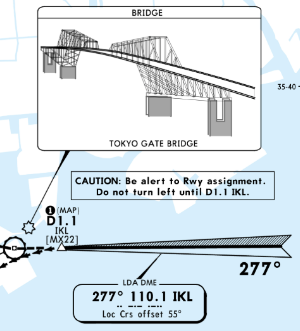

Categories
Difficult Approaches
-

LDA 22 – RJTT Terrain-intensive, Precision Required
-
 Mountain Pass – XYZ High Terrain, Narrow Margins
Mountain Pass – XYZ High Terrain, Narrow Margins
Scenic / Unusual Approaches
-
 Waterfront Approach – ABC Coastal, Visual Interest
Waterfront Approach – ABC Coastal, Visual Interest -
 Island Hop – DEF Short Fields, Remote
Island Hop – DEF Short Fields, Remote
Complex Airspace Approaches
-
 Downtown Arrival – GHI Urban, Multi-Airway
Downtown Arrival – GHI Urban, Multi-Airway -
 Converging Routes – JKL Intersecting Airways
Converging Routes – JKL Intersecting Airways